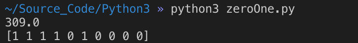

前言
最近在上智能优化技术的课程，它主要讨论的是使系统达到最优的目标的算法，通常是找到某个多变量函数的极大值或者极小值。因为在实际工程问题中，有很多目标函数没有办法用我们所学高等数学中标准的最大最小值求值方法，比如Rastrigin Function：
面对这种函数传统的数学方法就显得有点无力了。
而智能优化算法就是要解决这类复杂问题。常见的智能优化算法有：遗传算法（Genetic Algorithm）、差分演化算法（Differential Evolution）、免疫算法（Immune Algorithm）、蚁群算法（Ant Colony Optimization）、粒子群算法（Particle Swarm Optimization）、模拟退火算法（Simulated Annealing）、禁忌搜索算法（Tabu Search）等等。这些算法从某些自然现象中受到启发，比如粒子群算法模拟的就是鸟类捕食的过程，鸟群成员可以通过个体间的信息交流与共享获得其他个体的发现与飞行经历。
问题描述
本文将处理的是一个经典的算法问题——零一背包问题。即给定一个背包的大小（Capacity），已知有N种不同的物品，给出它们所占的空间（Space），以及它们所对应的价值（Value），要求求出在不超过背包容量下能装下的最大的物品价值量（MaxValue）。
以前做算法题的时候了解过动态规划解决这个问题的方法，如果大家有兴趣的话在网上可以搜到相应的解决代码。我这里提供一种用Python实现遗传算法解决零一背包问题的方法。
代码运行前
- 你的电脑需要安装Python3
- 你需要安装Numpy
- 如果你想看到绘图结果你还需要安装Matplotlib
算法代码剖析
零一背包问题其实可以简化为这些物品选还是不选的问题，那么我们可以进行编码：我们创建一个物品数量大小的数组，里面只存0和1，1代表我选了这个物品，0代表没选，这个数组就是一个方案的编码，也称作染色体，其中每个0或1称作基因。而我们的种群，就是有很多的方案，每个方案，就是一个个体。
所以你要明白，我们的遗传算法一开始就是随机的给出一定数目（种群大小）的解决方案，然后让它们模拟生物进化，适应值（得到的物品价值总和）越好的就越有机会留下来。留下来的进行杂交，最后经过很多次迭代后留下的就是最好的结果了。
为了避免出现结果是局部最优，比如爬山，有很多山，当种群到达一个中等高度的山顶的时候，它们发现周围的地形都比它们的位置低了，于是就认为这是最高的了（局部最优），就安于现状不动了，觉得到达世界之颠了。实际上在周围可能还有更高的山，超出了它们的视野范围。
所以要引入变异，让有的个体随机蹦到更远的地方，它就有可能蹦到比局部最优更好的地方，在大量的迭代下就能避免其他个体安于局部最优，从而让种群向发现更高山的那个个体靠近，最后得到最好的结果。
但是要注意，智能优化算法能保证一个能让人接受的结果，但并不代表严格数学意义上的最优值。
以下是实现代码：
1 | import numpy as np |
得到的结果：

绘图跟踪每次迭代：
后记
在写这个算法之前，我还从没写过Python，原本是打算用C++写的，但是我参考的是《智能优化算法及其MATLAB实例（第2版）》，里面都是Matlab实现，要用C++写出类似思想的算法真的很僵硬。而我不是很喜欢Matlab的语法，加上Matlab正版软件太贵了，学校没有购买，尽量还是不用盗版吧。早闻Numpy的大名，也听说Python不是很难，所以我用一个上午的时间查资料熟悉了一下Python的语法和Numpy的使用，粗略写下了如上算法，如果在阅读过程中有Python大佬发现我的语法不规范还请谅解。（不得不说Python的语法真是放飞自我）
关于引用
如果有需要转载文章或者使用源代码，只需要在文首加上：
原作者：Christoper Hoy
作者Blog：https://hoyyy.me
十分感谢。